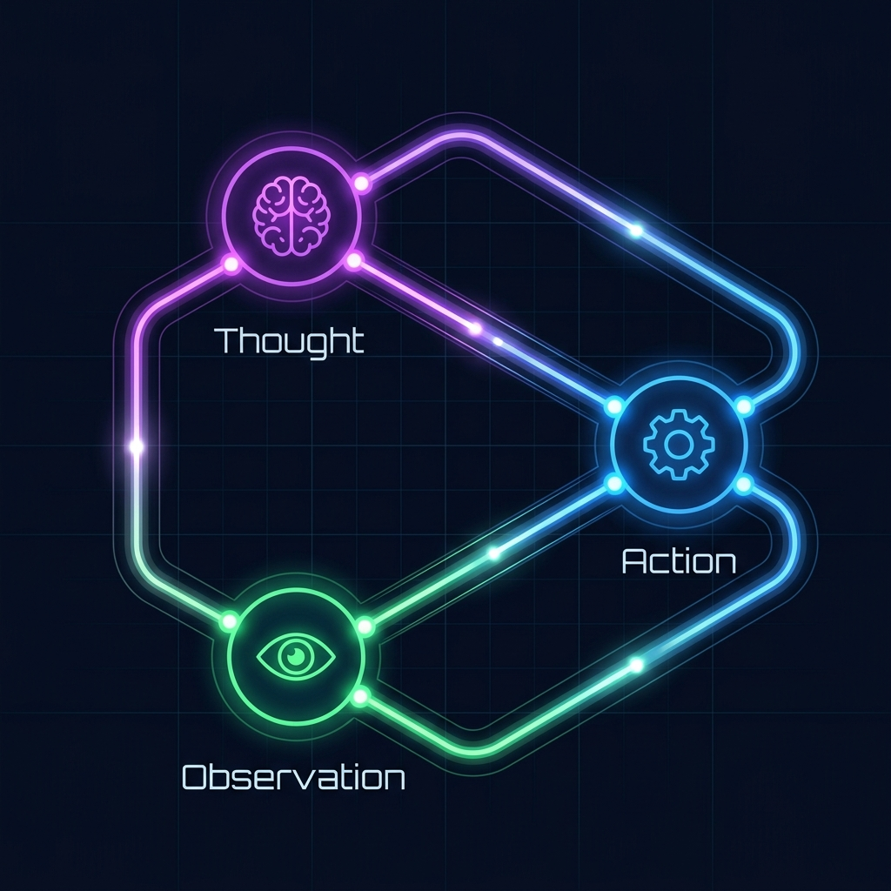
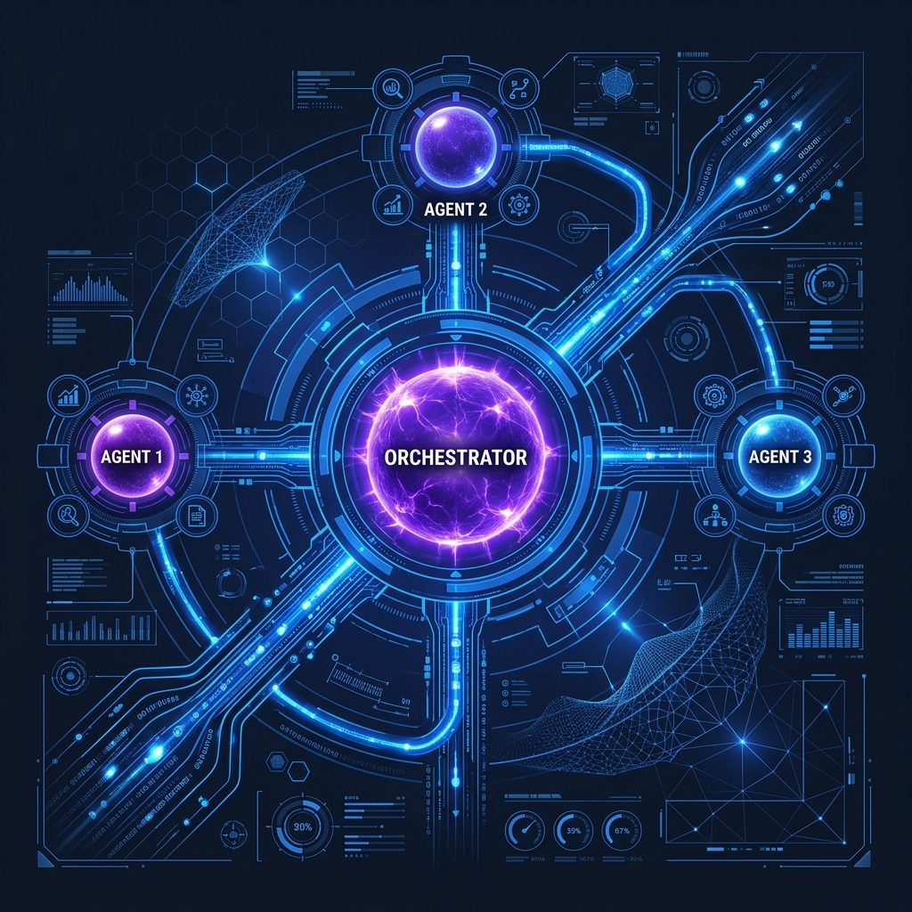

Flujos Agénticos Avanzados & Casos de Uso Corporativos
Transición hacia la IA Activa y el control estratégico de agentes autónomos
Sesión 3
IA Pasiva vs. IA Activa
La transición desde la recuperación estática de conocimiento (RAG) hacia la toma de decisiones autónoma (Agentes)
💡 En palabras simples: En la Sesión 2 vimos IA Pasiva (RAG): funciona como un bibliotecario que lee manuales y responde dudas, pero no toca nada. Hoy vemos IA Activa (Agentes): un asistente con manos propias que además de leer puede consultar Jira, enviar correos o actualizar sistemas por vos.
IA Pasiva (RAG Clásico)
Límites del Sandbox de PantallaEl bot solo responde preguntas, no altera bases de datos ni el mundo real.
Esquema Libro AbiertoLa base vectorial inyecta trozos de texto en el contexto y el modelo resume.
Disparador PasivoEl sistema permanece inactivo hasta que el usuario formula una consulta.
IA Activa (Sistemas Agénticos)
Alteración del Entorno RealEl agente llama APIs externas, ejecuta código y modifica registros de negocio.
Loops de RazonamientoUsa loops (ReAct) para planificar, actuar, observar y corregir el plan dinámicamente.
Orientado a ObjetivosEl usuario asigna una meta de negocio de alto nivel y el agente planifica los pasos.
Loops de Razonamiento: ReAct
Cómo piensa un agente antes de actuar: Razonar (Thought) → Usar Herramienta (Action) → Mirar el Resultado (Observation)
💡 En palabras simples: En lugar de responder por impulso en un solo paso, el Loop ReAct obliga a la IA a trabajar como una persona ordenada: 1) Piensa qué dato le falta, 2) Ejecuta una consulta en el sistema, y 3) Observa el dato real antes de contestar.
1. PensamientoThought
2. AcciónAction
3. ObservaciónObservation
Thought (Pensamiento)
El agente de IA analiza su objetivo, evalúa la información actual y deduce el siguiente paso lógico. Por ejemplo: "El usuario consulta el estado de entrega de los módulos del sprint. Para responder con datos reales, debo consultar la API de Jira / TMS".

[Haz clic para expandir la ilustración conceptual]
Patrones Agénticos: Orchestrator-Workers
Dividir un problema grande entre un Agente Coordinador (Orquestador) y Agentes Especialistas (Workers)
💡 En palabras simples: Si le pedís a un solo agente que lea PDFs, consulte bases de datos y redacte correos todo junto, se confunde. El patrón Orchestrator-Workers funciona como un Director de Proyecto que reparte tareas chicas a especialistas (uno lee el PDF, otro revisa Jira y otro redacta el mail).
Orquestador Central
Lector de PDFs
Auditor QA/TMS
Gestor Email

[Haz clic para expandir la ilustración]
Agente Orquestador (Coordinador)
Se encarga de recibir el objetivo general de negocio de alto nivel. Evalúa la meta, define un plan general de ejecución y delega micro-tareas a los agentes trabajadores especializados. Controla la ejecución general sin ensuciarse con detalles mecánicos.
Tool Calling: Invocación Dinámica de APIs
Cómo el agente pide usar herramientas externas (APIs y Servidores MCP como AWS, Jira o Slack)
💡 En palabras simples:Probabilístico = el cerebro de la IA (flexible, redacta e interpreta). Determinista = el sistema tradicional o calculadora (exacto, nunca improvisa). Con Tool Calling (y MCP en Antigravity), la IA no toca la base de datos directo: llena un formulario estructurado (JSON) pidiendo el dato y el sistema se lo devuelve seguro.
Modelo LLMEsperando consulta...
Usuario: "Verificar avance y capacidad del Proyecto #4 en plataforma"
¿Cómo funciona?
1. El PM define las herramientas en un JSON Schema indicando nombre, descripción y parámetros.
2. El LLM no corre código; devuelve una instrucción estructurada (JSON) con el nombre de la función y sus argumentos.
3. El backend de la empresa intercepta el JSON, ejecuta la consulta de forma determinista y segura, y retorna los datos a la ventana del bot.
KV Cache: Optimizando la Latencia
Cómo acelerar las respuestas del agente y ahorrar hasta un 60% de costos en tareas de varios pasos
💡 En palabras simples: Como un agente da varias vueltas (Pensar → Actuar → Observar) llevando siempre las mismas instrucciones base, KV Cache guarda esas instrucciones fijas en la memoria rápida para no volver a leerlas ni cobrártelas desde cero en cada vuelta. TTFT es simplemente cuántos segundos tarda en aparecer la primera palabra.
El Problema del Re-procesamiento
En un loop ReAct, el bot hace múltiples inferencias sucesivas agregando historial de conversación.
Sin KV Cache, el motor de la GPU debe re-calcular los pesos matemáticos de todo el prompt en cada turno, disparando la latencia. Con KV Cache habilitado, se guardan en la memoria RAM de la GPU reduciendo costos y tiempo en un 60%.
Simulador de Latencia (Inferencia de 5 Turnos)
Sin KV Cache
0.0s
Con KV Cache
0.0s
Human-in-the-Loop (HITL)
El freno de seguridad donde el agente hace el trabajo previo pero espera tu clic antes de ejecutar algo crítico
💡 En palabras simples:Human-in-the-Loop (HITL) es igual al botón "Proceed / Aprobar" que viste en Google Antigravity: el agente prepara todo el análisis, pero si la acción supera un límite de negocio (ej. más de $10,000 USD o borrar un registro), se pausa y te pide autorización a vos.
1. Objetivo Asignado
2. Evaluar Monto
3. Compuerta HITL
4. Completado
Simula la aprobación de un paquete de localización e infraestructura cloud por $12,500 USD. Al superar los $10k, se activa el freno Human-in-the-Loop.
COMPUERTA DE CONTROL DE RIESGOS
El sistema ha detectado una solicitud de presupuesto que excede la tolerancia automatizada ($10,000 USD). Aprobación manual de la PM requerida para autorizar la orden en Jira / ERP.
Caso de Estudio: Agente de Proyectos & Localización
Simulación real: cómo el agente detecta un equipo sobrecargado en Jira/TMS y propone reasignar el proyecto
💡 En palabras simples: Mirá cómo se combinan las piezas en tu día a día: el agente lee el pedido, consulta la disponibilidad en Jira (Tool Calling), descubre que el Squad Alpha está al 100%, busca al Squad Beta y te manda un mensaje por Slack (Human-in-the-Loop) para que apruebes el cambio con un clic.
Enterprise Workflow Agent
El agente lee el brief del nuevo release en PDF/JSON, consulta en el sistema de gestión (Jira/TMS) la disponibilidad del equipo y detecta que el squad original tiene su capacidad al 100%.
En lugar de detenerse, el agente consulta la API de disponibilidad de equipos, localiza un squad alternativo con capacidad libre, valida el glosario técnico e invoca aprobación humana (HITL) por Slack antes de reasignar el proyecto.
Enterprise Agent ConsoleSTANDBY
Esperando inicio del flujo agéntico...
Validación Estructurada (Esquema de Datos)
El "molde" obligatorio para que la IA entregue datos limpios que Jira o tu base de datos puedan procesar
💡 En palabras simples: Si tu sistema espera un número (500) y la IA responde con texto conversacional ("Son unas quinientas palabras aproximadamente"), el sistema se rompe. Pydantic funciona como un control de aduana: verifica que cada casillero tenga el formato exacto antes de dejarlo pasar.
Validador en Tiempo Real (DoD Playground)
Modifica los valores simulados de la IA. Observa cómo el validador Pydantic del backend detecta violaciones al contrato del PRD:
Cómo poner un "disyuntor automático" (Max Iterations) para que un agente no gaste presupuesto si una API falla
💡 En palabras simples: Si el servidor de Jira se cae y el agente intenta reintentar sin límite toda la noche, puede gastar cientos de dólares en llamadas a la IA. Como PM, siempre exigís un tope duro (ej. Máximo 5 intentos = Max Iterations) para que el sistema corte solo y avise del error.
El Peligro de la Auto-corrección
Si el agente encuentra un error en una API externa (ej. token expirado o timeout) y su prompt le indica resolver fallos de forma autónoma, podría entrar en un bucle cerrado haciendo miles de consultas de inferencia en segundos.
Para proteger los presupuestos, exigimos: 1) Límite de iteraciones físicas (máx. 5), 2) Timeouts estrictos, y 3) Alertas y suspensiones inmediatas en el backend.
Esperando arranque del loop...
Resiliencia y Fallbacks
El "Plan B" automático cuando se cae el proveedor de IA o un servidor externo
💡 En palabras simples: Un Fallback es como el generador eléctrico de un hospital: si se corta la ruta principal (Ruta A), el sistema cambia automáticamente a una ruta de respaldo (Ruta B, otro modelo o datos guardados en caché) sin que el usuario vea una pantalla rota.
Ruta A (API Principal Cloud): Consulta y sincronización en vivo con el sistema central.
Ruta B (Fallback Caché Local): Cargar base de contingencia y notificar de la caída.
Simulador de Red Externa
Simula una caída de la API principal para ver cómo el agente aplica Fallback automático sin interrumpir el servicio.
Taller: Mock PRD del Workflow Agent
Qué tenés que escribir vos como Product Manager en el documento de requerimientos (PRD) de un Agente
💡 En palabras simples: Para diseñar un agente no necesitás programar: tu trabajo en el PRD es definir 1) Qué rol cumple cada agente, 2) A qué herramientas tiene permiso de acceder, y 3) En qué momento exacto debe frenar y pedir aprobación humana (HITL).
Roles y Herramientas Autorizadas
Especificar las herramientas de invocación autorizadas para cada perfil del squad multi-agente:
Analista de Briefs & GlosariosExtraer Datos PDF
Auditor de Proyecto & QAQuery SQL Capacidad / Jira
Coordinador OrquestadorDelegar Micro-tareas
Gobernanza & HITL
Establecer límites duros: desvíos de presupuesto/horas superiores al 10% o cambios de fecha de entrega suspenden el loop del agente y requieren aprobación explícita del PM.
DoD: Pydantic + Max Iterations 5 + HITL.
Integración: API Gateways
El guardia de seguridad (como Amazon API Gateway + AWS IAM) entre el Agente de IA y tus bases de datos
💡 En palabras simples (Conexión con tu curso de AWS): Nunca le damos al agente la llave maestra de la base de datos. Ponemos un API Gateway en el medio (en AWS es Amazon API Gateway combinado con permisos AWS IAM) que revisa cada pedido del agente y bloquea cualquier acción no autorizada.
Agente de IA (Probabilístico)
API Gateway (Validador Rígido)
Base de Datos SQL (Producción)
Capa de Aislamiento de Seguridad
Los agentes autónomos son probabilísticos. Si les das acceso de escritura directo a la base de datos de Producción, un error de razonamiento o una inyección maliciosa podría borrar tablas enteras o alterar registros fiscales.
La Regla de Oro Enterprise: El bot interactúa exclusivamente a través de APIs internas controladas. El API Gateway actúa como el cortafuegos determinista que valida tipos de datos e integridad relacional.
Defensa Técnica ante CTOs
Cómo responder con seguridad en una entrevista o reunión con Ingeniería cuando te preguntan por riesgos de IA
💡 Tu fórmula de respuesta en 3 pasos ante cualquier líder técnico: 1) La IA propone los datos en un molde estricto (Pydantic), 2) Pasa por un control de reglas del sistema (API Gateway), y 3) Si supera el límite permitido, frena y pide autorización de una persona (Human-in-the-Loop).
CTO: "Tenemos un agente enviando cotizaciones automáticas. Un cliente inyectó un prompt malicioso y consiguió un 90% de descuento. ¿Cómo se soluciona en la arquitectura?"
"El error radicó en dar autonomía de salida de texto libre y confirmación directa. La solución técnica es desvincular al agente de la firma final. Primero, el bot debe emitir la cotización en variables estructuradas (Pydantic). Segundo, una API determinista compara el valor contra la base de datos de tarifas. Tercero, si el descuento excede el 10% de tolerancia máxima permitida, el sistema suspende de forma automatizada la operación y deriva el flujo a una compuerta Human-in-the-loop."
Hoja de Ruta de Anabela
Evolución técnica y posicionamiento estratégico en el mercado internacional
Sesión 1
Fundamentos
Ciclo de vida del software, APIs de comunicación, control de versiones Git y lógica de backend.
Sesión 2
IA Pasiva & RAG
Bases vectoriales, embeddings semánticos, metadata filtering y calibración de umbrales.
Sesión 3 (Hoy)
IA Activa & Agentes
Orquestadores, ReAct loop, tool calling, control de costos, fallbacks y compuertas HITL.
Sesión 4 (Próxima · Final)
Finanzas, Evals & Entrevistas
1) Costos por Token, Prompt Caching (-90%) y Calculadora ROI; 2) Privacidad PII/NDA; 3) Calidad (Tríada RAG) y Langfuse; 4) Simulacro de 3 Entrevistas IT.
🔭 ¿Qué vamos a ver en detalle en la Sesión 4 (Última Clase)?1. 💰 Finanzas de IA & Calculadora ROI: Costo Input vs. Output tokens (+25% en español), ahorro del 90% con Prompt Caching y tabla financiera RAG vs. Fine-Tuning. ·
2. 🛡️ Privacidad & NDA: Enmascaramiento automático de datos personales (PII Sanitization). ·
3. 📊 AI Evals & Langfuse: Cómo medir alucinaciones con puntaje (Tríada RAG) y radiografiar tiempos y costos en vivo con Langfuse. ·
4. 🎯 Simulacro de Entrevistas: Resolver en vivo 3 crisis reales de PM (Presupuesto disparado, Latencia de 12s y Fuga de datos).
La Consigna Semanal (PRD & Workflow Diagram)
Estructurar el PRD del "Enterprise Workflow Agent" definiendo los roles de sus 3 agentes trabajadores, las APIs e interruptores autorizados, y el diagrama de compuertas HITL y validación estructurada.